This English guide uses BBS · Ejemplo de manual, project C-0050-P-20261005. The screenshots were taken using the stated role in an isolated database running the application. Training entries, payments, approvals and documents are fictional. They do not prove a real bank transfer, accountant approval or customer acceptance.
The company portal at https://j-aautomation.com/j-aautomation/app is LIVE. Training uses a separate URL and database. Before practising, obtain the isolated URL, your own role account and permitted exercises from the company administrator; verify the BBS project number. Without isolated access, treat these screenshots as read-only demonstrations and perform only authorized real work.
Use your own credentials. Do not borrow an Owner, Finance or colleague account. A platform role, project assignment, review permission, supplier authorization and dated crew delegation are separate requirements. Changing one does not automatically grant the others.
Select English in the workspace language control to follow the labels used here. Some saved BBS record names remain in their original language. On a phone open the navigation drawer to see full workspace names. Recheck the selected project and date range after every navigation.
The eight Worker test accounts in the private credentials document use the same Worker workflow. Crew chief is a dated delegation attached to a Worker account. Supplier Coordinator and External Technician are restricted profiles attached to Worker accounts. This guide never includes account passwords.
Each screenshot is an exercise checkpoint. Later fictional role entries and financial events are additional to the original October 1–5 workbook totals. Reopening the project or selecting the same dates does not restore that checkpoint. Read captions before comparing amounts or states.
Verify the result
Confirm your displayed account, role or supplier profile, the project number and the dates before saving.
For training access, scope or reset help, contact the company administrator at admin@j-aautomation.com. Include the role, route, project number, time and visible error; omit passwords, cookies and private customer or worker documents.
If you get stuck
An empty project selector often means missing or expired assignment or authorization. Ask the Owner to check coverage for the date you are entering; do not create a duplicate project.
A form shown in a screenshot can depend on role, source state or effective date. Use the documented role handoff when a control is absent.
J&A Automation · BBS role manual · 6 October 2026
Understand Chief authority before recording crew work
Isolated BBS role lab · genuine Chief Worker account · dated October 1–31 delegation
Go here: Sign in → Crew hours
Chief is an ordinary Worker account with dated person/project delegation. Account role, project assignment, crew-chief delegation and Can review permission are separate. In this BBS example the Chief may record for Worker 1 and Worker 2 during October 1–31; assignment review permission is off.
Before practising obtain an operator training URL, own account, visible environment identity, permitted scope and reset instructions. No shared training credentials are provided. Live company links remain live company services. Every illustrated mutation here is fictional and isolated.
Crew hours handles delegated operational entry. Time, Expenses, Reports and My Pay still handle your own Worker records. Delegation does not reveal crew compensation or grant Finance access; Chief authenticated Approvals and Finance requests returned 403.
Do the task
Confirm your own Chief account and the isolated environment. Open Crew hours.
Select Project and Work date, then Show project. Check that intended members are offered for this date.
Verify the result
The delegated crew list is date-specific. The October 1–31 grant covers the worked October 6 and 15 examples.
If you get stuck
Ask the Owner to correct expired/missing delegation or assignment. Do not select another account to gain access.
J&A Automation · BBS role manual · 6 October 2026
Understand Chief authority before recording crew work
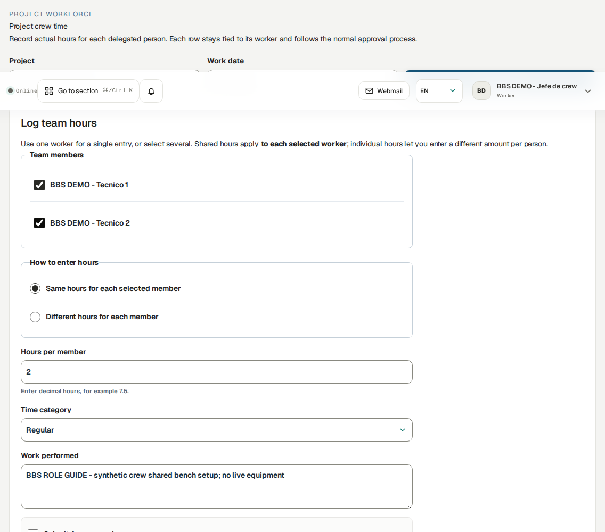
Actual Chief delegated entry controls; authority comes from dated grants, not the word Chief.
J&A Automation · BBS role manual · 6 October 2026
Save the same actual hours for multiple crew members
Isolated BBS role lab · genuine Chief Worker account · dated October 1–31 delegation
Go here: Crew hours → Log team hours
Same hours for each selected member means the full duration applies to each person. Two selected workers at 2 h creates two 2 h sources, total 4 actual hours; it does not split a shared 2 h total.
The October 6 bench setup is explicit simulated activity with no live equipment changes. Each saved row retains its worker and source ID.
Do the task
Select Project and Work date and Show project. Tick only the authorized Team members who actually worked.
Choose Same hours for each selected member. Enter Hours per member 2, category and Work performed.
Leave Submit for approval now off to inspect the saved drafts; use Save 2 people. Inspect each 2 h row.
Use each intended row’s Submit action and confirm Submitted.
Verify the result
Two separate 2 h sources were saved and submitted; both remain awaiting operational review in this packet. Chief did not approve them.
If you get stuck
If one person/time is wrong, correct that draft through its permitted row controls before submitting. Do not save another batch while trying to locate the first one.
J&A Automation · BBS role manual · 6 October 2026
Save the same actual hours for multiple crew members
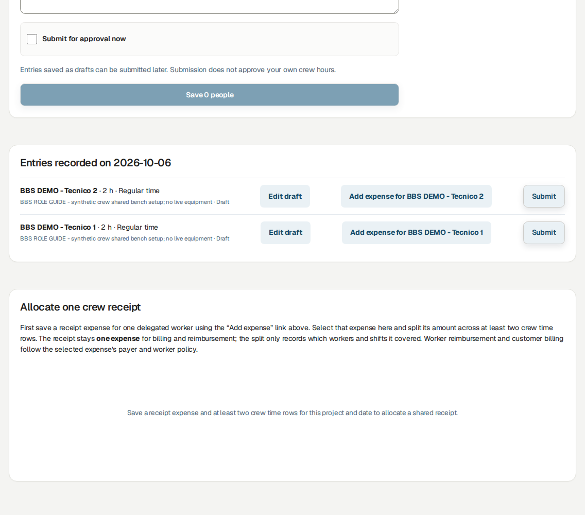
Native saved 2 h+2 h Draft rows for the two selected delegates.
J&A Automation · BBS role manual · 6 October 2026
Save the same actual hours for multiple crew members
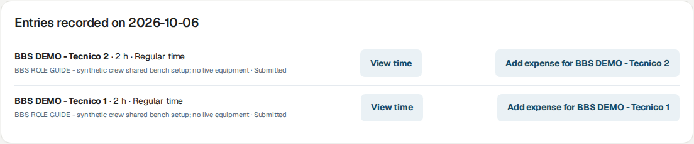
Both separate sources Submitted; review permission remains a separate handoff.
J&A Automation · BBS role manual · 6 October 2026
Use different actual hours and submit deliberately
Isolated BBS role lab · genuine Chief Worker account · dated October 1–31 delegation
Go here: Crew hours → Different hours for each member
The October 15 exercise entered 0.5 h for Worker 1 and 1 h for Worker 2, category Travel. Individual hours reflect each person’s actual activity. Checking Submit for approval now combines save and submission; it does not approve the work.
Do the task
Select the authorized members and Different hours for each member. Enter each worker’s hours, category and shared factual Work performed.
Review the selected date/member names and tick Submit for approval now only when ready. Use Save 2 people.
Inspect both resulting rows and their states. The PM approved Worker 1’s 0.5 h and returned Worker 2’s 1 h for 0.75 h correction.
Verify the result
Separate 30 minute and 60 minute sources were saved as Submitted. Their later review outcomes are independent.
If you get stuck
An absent member or blocked date requires Owner delegation/assignment review. An unsent row can be corrected through its current controls; reviewed history requires the proper linked process.
J&A Automation · BBS role manual · 6 October 2026
Use different actual hours and submit deliberately
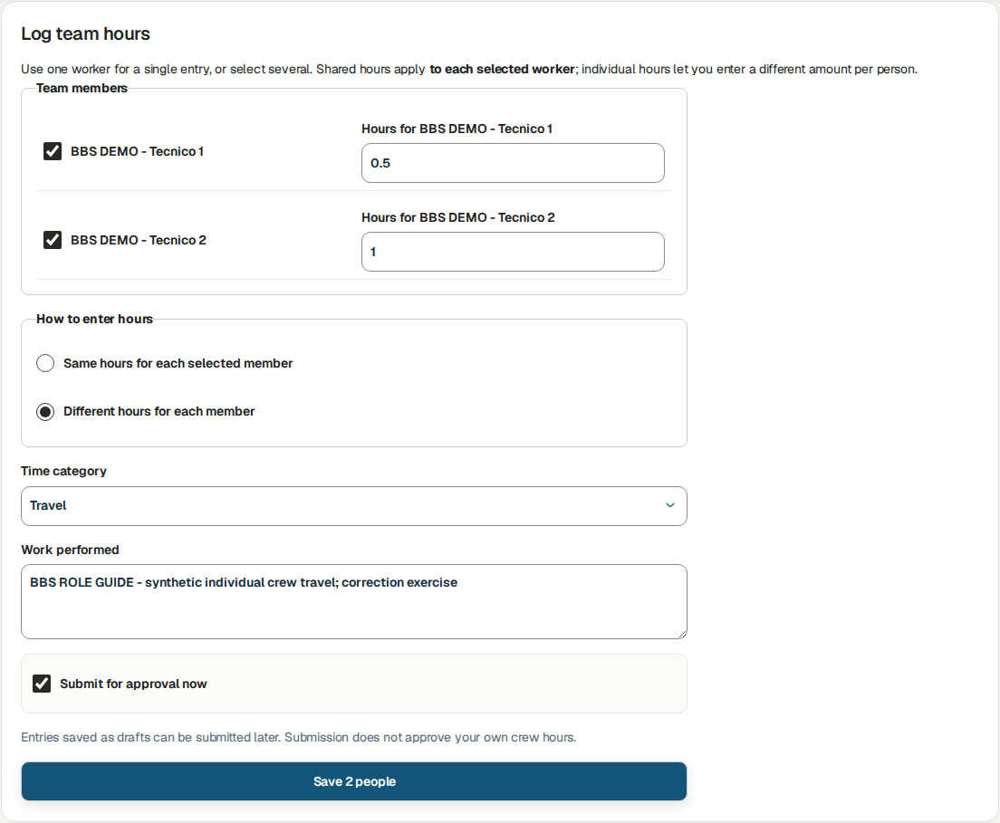
Actual individual-hours form before saving 0.5 h and 1 h.
J&A Automation · BBS role manual · 6 October 2026
Use different actual hours and submit deliberately
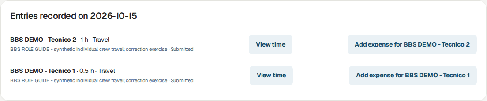
Saved native individual sources, Submitted for operational review.
J&A Automation · BBS role manual · 6 October 2026
Correct a delegated returned entry
Isolated BBS role lab · genuine Chief Worker account · dated October 1–31 delegation
Go here: Crew hours → View time → Create corrected draft
The genuine PM returned Worker 2’s 1 h travel source with a 0.75 h reason. The delegated Chief could create and submit a linked replacement because the October 15 period was outside that worker’s finalized October 1–14 settlement. Delegation is still checked for the source/date.
Do the task
Open the returned crew source using View time. Read Needs changes and the reviewer’s reason.
In Create corrected draft enter Reason, Work date, Time category, Actual hours 0.75 and factual Work performed. Create the correction.
Inspect the new Draft and original link. Use Submit for approval now on this crew correction detail.
After PM review, refresh the selected date and inspect the Approved replacement.
Verify the result
The original 1 h remains Needs changes; the linked 45 minute 0.75 h replacement is Approved. Worker 1’s 0.5 h remains separately Approved.
If you get stuck
A settled/paid compensation guard requires Finance’s explicit adjustment; do not duplicate a crew entry or change its date/person to evade it. The Chief does not gain self-approval by creating a correction.
J&A Automation · BBS role manual · 6 October 2026
Correct a delegated returned entry
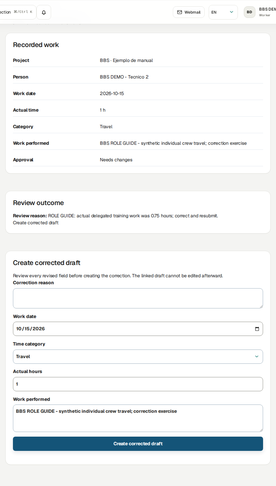
Native returned delegated source and reviewer reason.
J&A Automation · BBS role manual · 6 October 2026
Correct a delegated returned entry
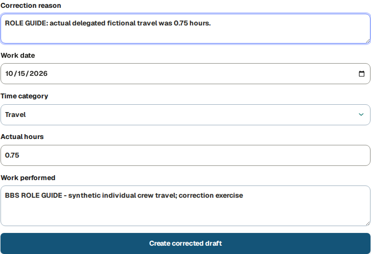
Actual delegated correction form 1 h→0.75 h with reason.
J&A Automation · BBS role manual · 6 October 2026
Correct a delegated returned entry
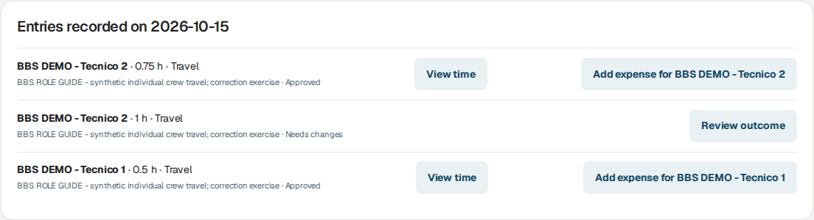
Current crew rows: Approved 0.5 h and 0.75 h, historical original 1 h preserved.
J&A Automation · BBS role manual · 6 October 2026
Record one crew expense with its actual payer
Isolated BBS role lab · genuine Chief Worker account · dated October 1–31 delegation
Go here: Crew hours → Add expense for [worker]
The Chief recorded one explicitly synthetic USD 20 meal receipt for Worker 2, paid by Worker. The link preselects the delegated worker/source. Record expense for is restricted to the Chief and authorized delegates; it does not grant arbitrary person access.
Expense owner, payer and later allocation are distinct. A Chief can record delegated operational facts without seeing another worker’s reimbursement details. No real purchase or transfer occurred.
Do the task
From the intended crew row choose Add expense for that worker. Check Record expense for, Project, Date and related hours.
Attach the single receipt and fill Category, Amount 20, Currency USD, Who paid and factual Description. Save draft.
Open the saved detail and inspect the source/receipt/payer. Use Submit only after the receipt allocation and facts are verified.
Verify the result
Exactly one USD 20 expense was saved. Genuine PM operational approval followed submission. Finance classification/payment is a separate handoff.
If you get stuck
Use permitted draft/correction controls for wrong values. Do not create a separate full 20 expense for every crew member.
J&A Automation · BBS role manual · 6 October 2026
Record one crew expense with its actual payer
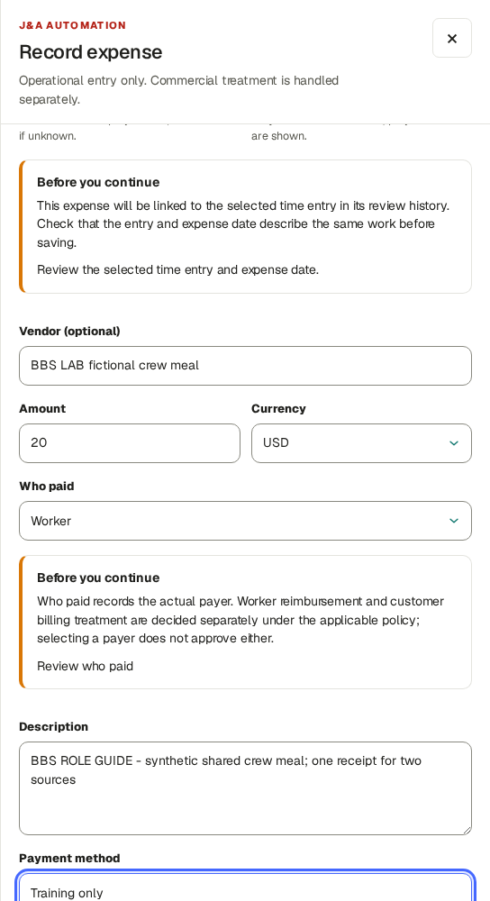
Actual delegated expense form, USD 20 single synthetic receipt.
J&A Automation · BBS role manual · 6 October 2026
Record one crew expense with its actual payer
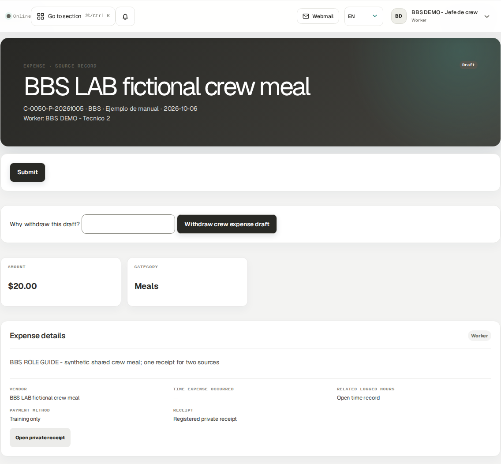
Saved delegated expense; another worker’s private reimbursement values are not exposed.
J&A Automation · BBS role manual · 6 October 2026
Record one crew expense with its actual payer
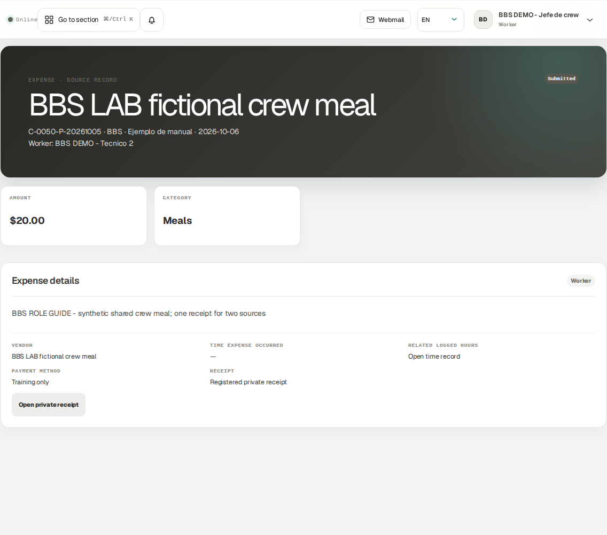
Crew expense Submitted, later operationally approved by PM.
J&A Automation · BBS role manual · 6 October 2026
Split one receipt across worked sources
Isolated BBS role lab · genuine Chief Worker account · dated October 1–31 delegation
Go here: Crew hours → Allocate one crew receipt
Allocation distributes a single purchase across source shifts; it does not multiply the purchase, choose new reimbursement recipients or create invoices. The USD 20 receipt was split 10+10 across the two October 6 crew sources.
The selected set must include at least two valid crew time sources and the expense’s initially related shift. The allocation sum must match the one receipt amount.
Do the task
Select the saved Receipt expense and the related crew time entries.
Enter Amount for worker 10 for each of the two selected sources, then Save receipt allocation.
Refresh Allocate one crew receipt and inspect the saved split and expense total.
Verify the result
One expense USD 20 remains; allocations USD 10+USD 10 sum 20. The originally linked Worker 2 shift is included.
If you get stuck
Allocated receipts can lock draft edit actions. Investigate the existing allocation/expense with the reviewer rather than making duplicate expenses or altering hours to force a split.
J&A Automation · BBS role manual · 6 October 2026
Split one receipt across worked sources
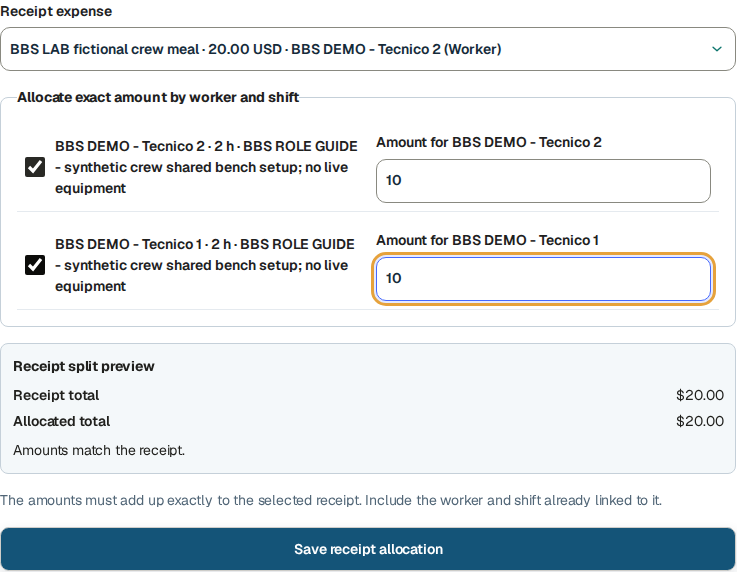
Native allocation form selects two sources and 10+10 amounts.
J&A Automation · BBS role manual · 6 October 2026
Split one receipt across worked sources
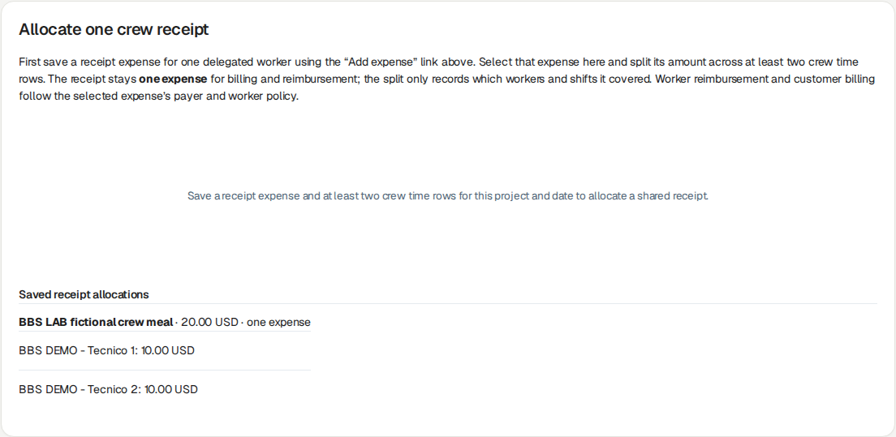
Actual saved split of one USD 20 receipt; allocation is not worker payment.
J&A Automation · BBS role manual · 6 October 2026
Hand operational work to the permitted reviewer
Isolated BBS role lab · genuine Chief Worker account · dated October 1–31 delegation
Go here: Crew hours → submitted sources; reviewer → Approvals
The Chief’s delegation permits the exercised recording/correction operations, but this Chief has no review permission. The genuine assigned PM reviewed the sources using its own account. Finance then reviews financial treatment where applicable.
Operational approval, billability, customer invoicing, worker settlement, reimbursement and cash payment are separate stages. A Chief should not assume a submitted row is paid or invoice-ready.
Do the task
Inspect each member’s source state after submission. Send the PM record IDs, work date and any material evidence or safety concern.
Read a returned reason on the actual source. Correct through the permitted linked flow; do not silently overwrite history.
Hand financial policy/settlement issues to Finance/Owner.
Verify the result
Worker 2 corrections and Worker 1 Oct 15 travel are Approved. The two October 6 shared 2 h crew rows remain Submitted in this evidence packet.
If you get stuck
If Approvals is denied, ask the Owner who has review permission. Never borrow the reviewer’s account.
J&A Automation · BBS role manual · 6 October 2026
Record and submit your own Chief hours separately
Isolated BBS role lab · genuine Chief Worker account · dated October 1–31 delegation
Go here: Time → Log time; Submit this week
The Chief’s own actual work belongs in its own Worker Time workspace. Crew entries for delegates do not include the Chief’s duration. The exercise saved 0.25 h own handover on October 6.
This ordinary own draft was submitted using the native Submit this week flow. Bulk submission concerns your own selected-week drafts; it is not a universal batch submission of everyone’s crew records.
Do the task
Open Time, choose Log time and record your own project/date/actual hours/activity. Save draft and inspect the row.
Open Submit this week, select the week beginning October 5, inspect its one draft and choose Submit all week drafts.
Open the source and confirm Submitted; the genuine PM subsequently approved it.
Verify the result
One own 15 minute Chief source progressed Draft→Submitted→Approved. Delegated member durations are separate.
If you get stuck
Check the own draft count before submitting a week. For linked or financially guarded sources use exact record controls and Finance handoff.
J&A Automation · BBS role manual · 6 October 2026
Record and submit your own Chief hours separately
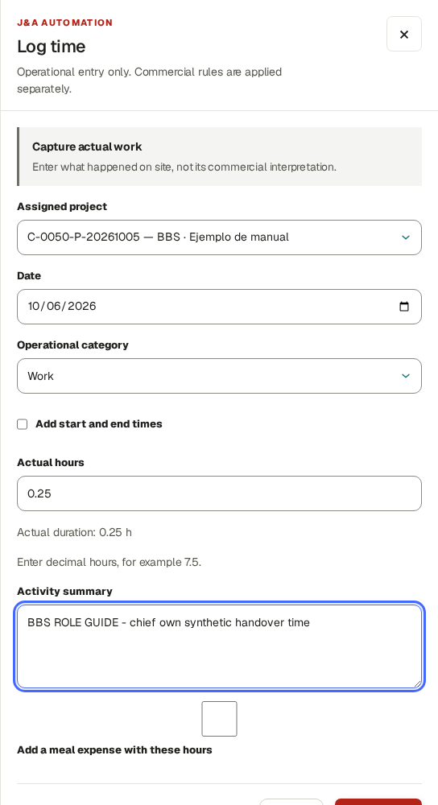
Chief own Worker Time form, 0.25 h fictional handover.
J&A Automation · BBS role manual · 6 October 2026
Record and submit your own Chief hours separately
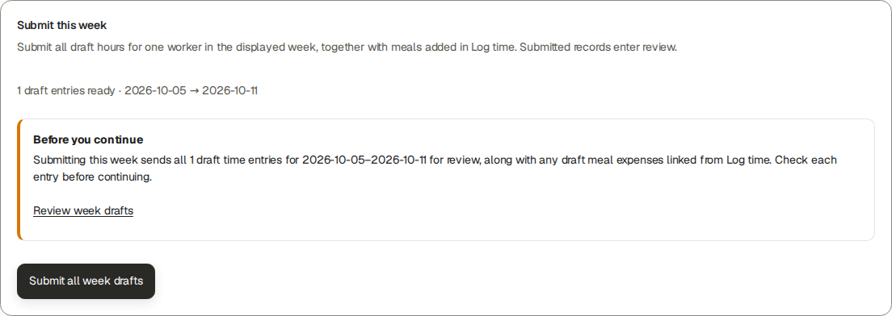
Native own-week draft summary before bulk submission.
J&A Automation · BBS role manual · 6 October 2026
Record and submit your own Chief hours separately
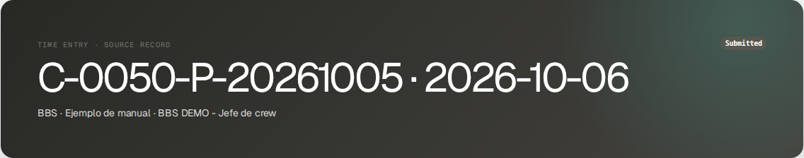
Own Chief source Submitted; PM approval followed.
J&A Automation · BBS role manual · 6 October 2026
Write a Chief daily handover report
Isolated BBS role lab · genuine Chief Worker account · dated October 1–31 delegation
Go here: Reports → New daily report
Chief reporting uses the Chief’s own author account. The native own Daily form has no arbitrary-worker selector. Delegated time entry does not imply report author impersonation.
Write factual crew coordination/conditions, with member source IDs when needed. A Daily report does not replace each actual timesheet or prove customer acceptance.
Do the task
Select Project, Work date and Site / shift; fill Shift summary and Tasks completed. Include actual problems/actions, downtime, standby, open items, next day plan and safety flag where applicable.
Use Save daily report. Inspect the Draft, then Submit for review.
Confirm Submitted and the permitted reviewer’s later state.
Verify the result
Chief own fictional crew-handover report was saved, submitted and operationally approved by the genuine PM.
If you get stuck
Use draft edits before submission. For later corrections, preserve approved history and follow the offered report correction or reviewer handoff.
J&A Automation · BBS role manual · 6 October 2026
Write a Chief daily handover report
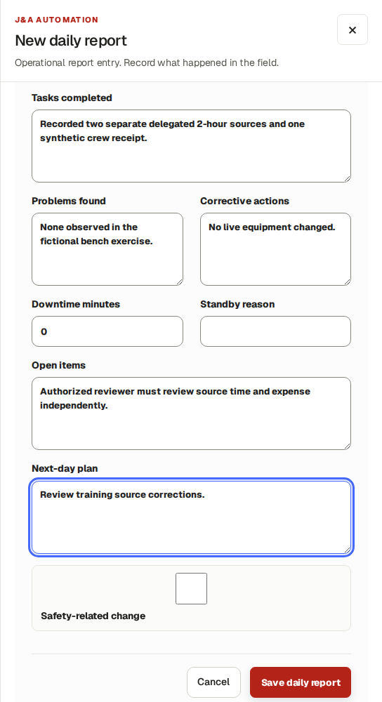
Native own-author Chief Daily form; no delegation-based impersonation.
Isolated BBS role lab · genuine Chief Worker account · dated October 1–31 delegation
Go here: Reports → New technical report
The Chief’s Technical report is its own authored evidence, separate from crew hours and customer billing. This worked system is explicitly a fictional bench; no live PLC change occurred.
Capture equipment identifiers, Problem / symptom, Diagnosis / root cause, Change performed, production impact, validation/result, open risk and rollback. Safety/change authorization remains governed by real responsible-person procedures.
Do the task
Open New technical report and identify Project, Work date and System / machine; fill applicable machine/platform/version fields and factual technical narrative.
Use Save PLC report, inspect the Draft, then Submit for review.
Check review state and hand genuine risks/open work to the responsible PM/technical reviewer.
Verify the result
Chief own Technical source progressed Draft→Submitted→Approved through genuine PM review.
If you get stuck
Do not use a report submission as permission to modify live equipment or fabricate successful validation. Attachment/PDF generation for this own report was not exercised here.
J&A Automation · BBS role manual · 6 October 2026
Document your technical findings and validation
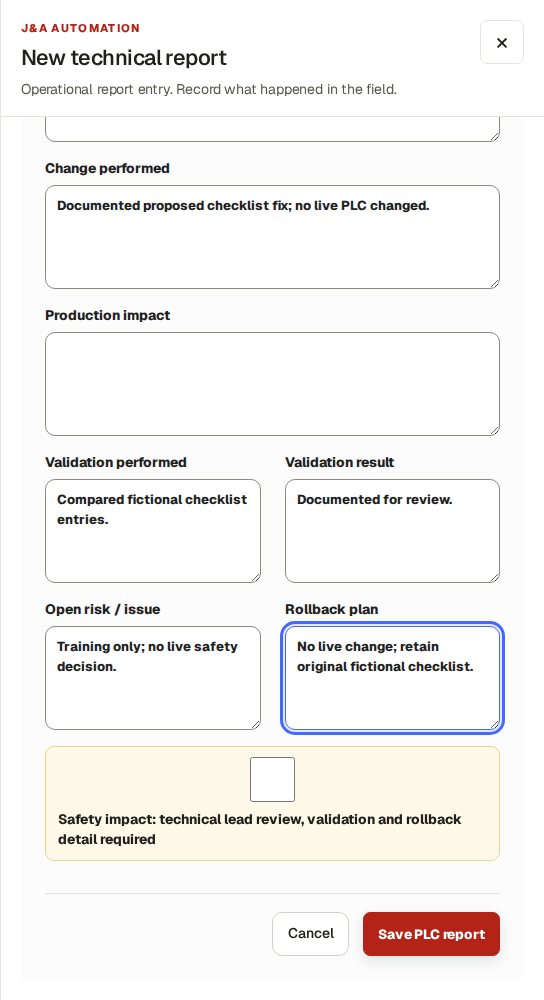
Native fictional Chief Technical form.
J&A Automation · BBS role manual · 6 October 2026
Document your technical findings and validation
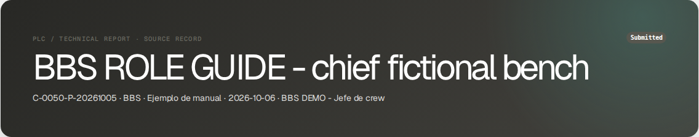
Own Technical Submitted; operational approval followed.
J&A Automation · BBS role manual · 6 October 2026
Read only your own pay and reimbursements
Isolated BBS role lab · genuine Chief Worker account · dated October 1–31 delegation
Go here: My Pay → Apply period
The Chief sees its own compensation, not crew members’ agreements/payments. The historical October 1–4 snapshot shows 10 actual hours, USD 400 approved compensation and USD 20 approved reimbursement; copied training payment records have no claim to a real bank transfer.
Customer daily/weekly/hourly units and invoice cadence do not dictate worker settlement or payment cadence. Expected date, reviewed amount, paid and remaining are different fields. Source estimates follow dated worker rules, not crew receipt allocations.
Do the task
Select your intended From / Through dates and Apply period.
Read approved/pending estimates separately, then the reviewed settlement’s own period, planned date and paid/remaining values.
Use Worker statement generation only for your own account and wait for ready artifacts before downloading.
Verify the result
Crew hour delegation does not expose Worker 1/2 private pay. A split receipt does not create compensation or prove reimbursement.
If you get stuck
Send missing-rule/settlement/reimbursement questions to Finance with your own source/period. Do not infer another person’s pay from recorded hours.
J&A Automation · BBS role manual · 6 October 2026
Read only your own pay and reimbursements
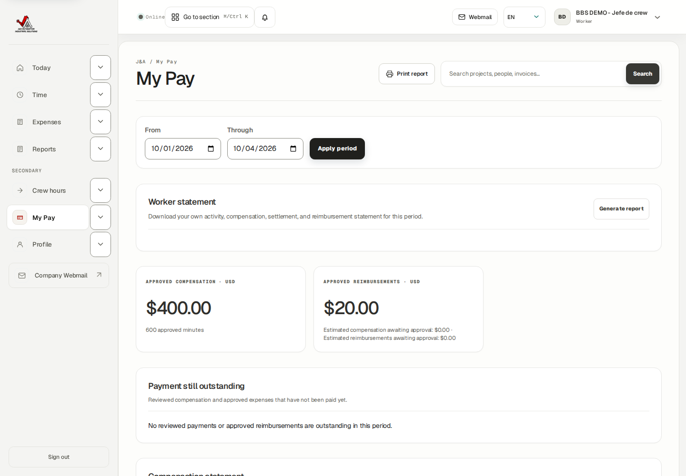
Actual Chief own historical training payment view; not crew payroll visibility.
J&A Automation · BBS role manual · 6 October 2026
Operate crew controls on a phone or tablet
Isolated BBS role lab · genuine Chief Worker account · dated October 1–31 delegation
Go here: Crew hours → Project / Work date
Phone/tablet views preserve the same dated delegation checks. Use More or the navigation drawer for destinations outside the bottom bar. Intentional internal table scrolling is different from page-level overflow.
Do the task
Choose Project and Work date before selecting members. On narrow screens review the chosen names and individual durations carefully.
Scroll to the saved crew rows or allocation section after saving; verify the result before repeating an action.
Verify the result
Crew views were checked at 1440, 768 and 390 pixels with no page-level horizontal overflow.
If you get stuck
If a control is clipped, report the width and precise action with a safe screenshot. Do not re-save the same batch to compensate for a hidden result.
J&A Automation · BBS role manual · 6 October 2026
Operate crew controls on a phone or tablet
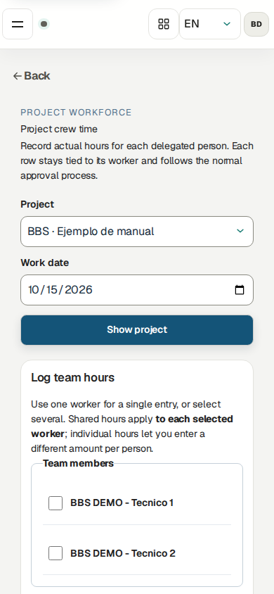
Native 390 pixel Chief crew viewport.
J&A Automation · BBS role manual · 6 October 2026
Operate crew controls on a phone or tablet
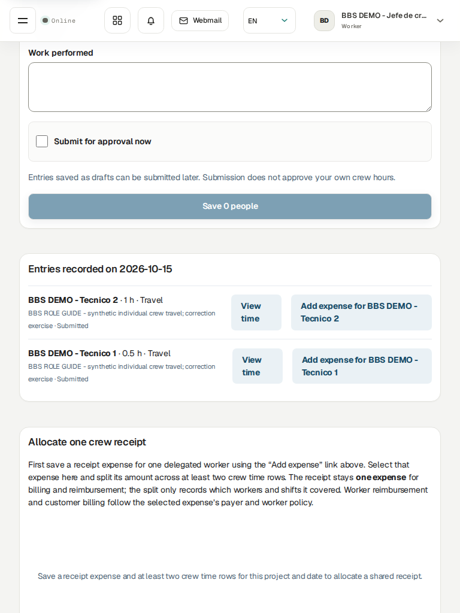
Native 768 pixel Chief crew viewport.
J&A Automation · BBS role manual · 6 October 2026
Manage your own profile and ask for support
Reference procedure · current controls/source checked; mutations not exercised in this role lab
Go here: Profile; Notifications; Help
Profile expertise and availability affect planning, not delegation/review permission or actual hours. Security belongs to your individual account: passkey Device name/Register passkey and authenticator setup/recovery should be kept private. These changes were not performed in the Chief lab.
Notifications can lead to returned sources or pending work; marking read does not approve them. Help’s verified contact is admin@j-aautomation.com. Live portal/webmail links are live services. No support message was sent.
Do the task
Maintain genuine own expertise/availability using offered Profile controls. Ask the Owner for crew delegation, account status or review permission changes.
Follow a notification to its current record and inspect state before acting.
Send support the environment, role, project/record ID, date, intended action and exact message. Exclude credentials/private pay.
Verify the result
Chief GET Finance and Approvals returned 403. Delegation is not financial or approval authority.
If you get stuck
If a crew member disappears, check selected date and Owner-grant coverage. If a source is settlement locked, hand it to Finance; do not substitute credentials or duplicate history.
J&A Automation · BBS role manual · 6 October 2026
Verify the crew handover
Isolated BBS role lab · genuine Chief Worker account · dated October 1–31 delegation
Go here: Crew hours → Reports → own Time → reviewer handoff
Use a single handover list for the selected workday; crew recording, your own work and financial review remain separate.
Do the task
Confirm environment/account/project/date and delegated member coverage.
Save each member’s actual duration/category once; inspect shared per person versus individual amounts.
Record each purchase once; allocate one shared receipt only across valid linked shifts and verify the sum.
Submit intended crew rows and your own Time/report drafts.
Read review returns and create linked corrections where allowed. Send settlement guards to Finance.
Confirm current member states and own report states; tell PM which sources remain Submitted/open and which risks remain unresolved.
Verify the result
Lab passes: shared/individual native crew entry, separate Submitted sources, single receipt 20 allocation 10+10, delegated correction 1→0.75 PM Approved, own weekly time Submit and own Daily/Technical PM Approved, denied Approvals/Finance and responsive views.
If you get stuck
Reference-only: delegation/account setup, review-enabled Chief actions, draft withdrawal, report attachment/PDF/customer acceptance, own security/profile mutations, bank/email delivery and actual payroll. The illustrated Chief had no review permission.
J&A Automation · BBS role manual · 6 October 2026
What was verified and what remains a reference
Isolated BBS role lab · actual browser outcomes and explicit limits
Go here: Verification appendix
Native authenticated browser records, synthetic receipt fixtures and SHA-256 capture manifests are maintained with the guide. Account secrets are excluded. Original billed October 2–5 history and finalized worker settlements were preserved.
Actual saved/submitted/returned/approved states are distinguished from controls merely inspected. The Owner/PM/Finance handoffs used their own genuine role sessions. This evidence does not claim real bank transfers, live equipment changes or production transactions.
Do the task
Chief used an ordinary Worker account with dated October 1–31 grants for Worker 1/2.
Shared two-hour-per-person entries saved as separate drafts and submitted; both remain awaiting operational review.
Different 0.5-hour/1-hour Travel entries saved and submitted; PM approved the first and returned the second.
Delegated 1-hour source corrected to 0.75 hour through a linked replacement, submitted and PM approved.
One USD 20 receipt allocated 10+10 across two crew sources, submitted and PM approved.
Chief own Daily and Technical reports saved, submitted and PM approved.
Chief own 0.25-hour source saved, submitted through its own weekly flow and PM approved.
Own My Pay historical training snapshot inspected; no crew private compensation exposed.
Approvals and Finance denied; desktop/tablet/phone Crew pages fit their viewports.
Verify the result
See the adjacent task checklist and role capture manifest for source IDs, screen widths, artifact integrity and expected permission denials.
If you get stuck
Reference-only or unperformed here: Account/delegation changes; Review-enabled Chief approval actions; Draft withdrawal; Report attachment/PDF/customer acceptance; Profile/security changes; Actual bank/email delivery.